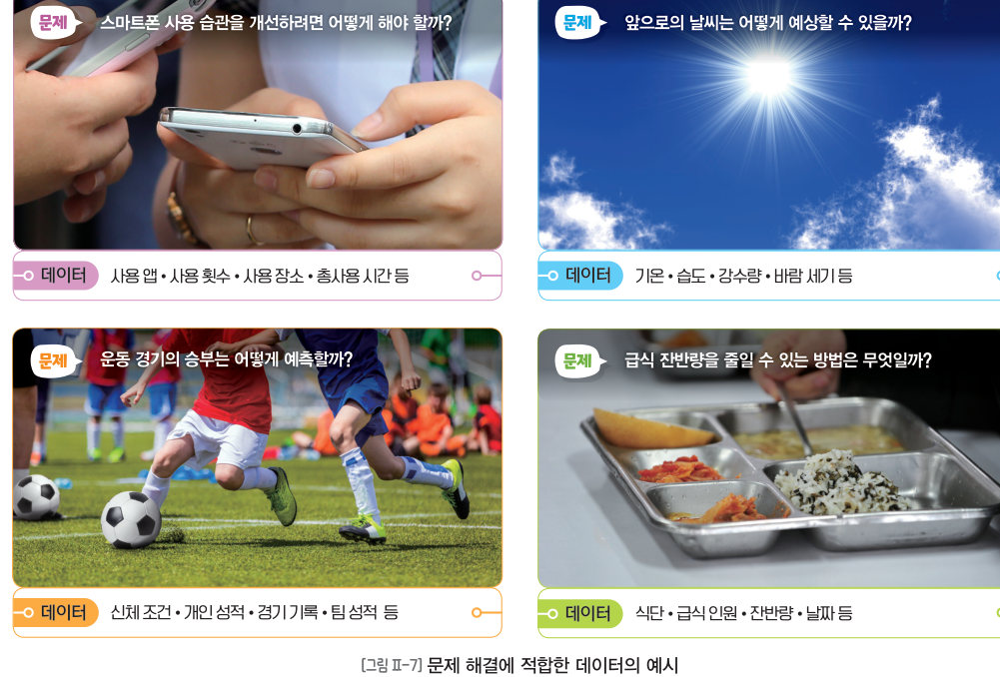
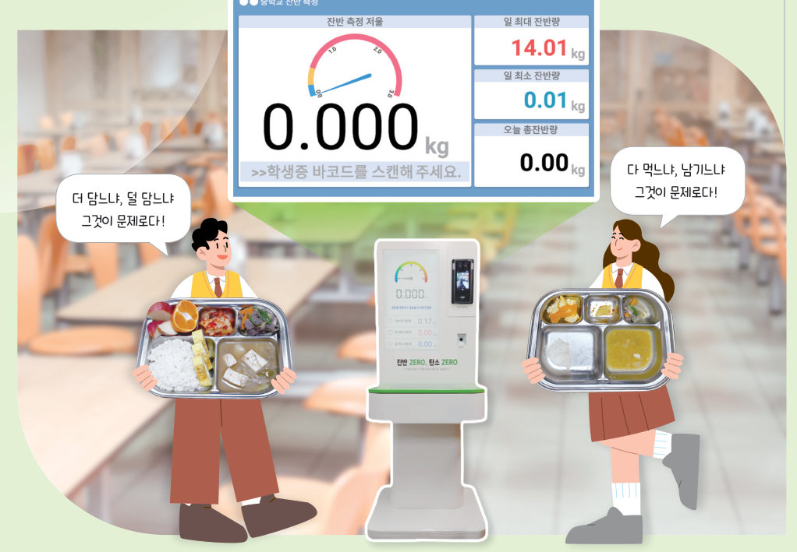
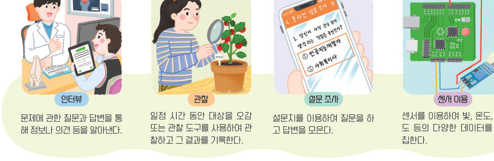
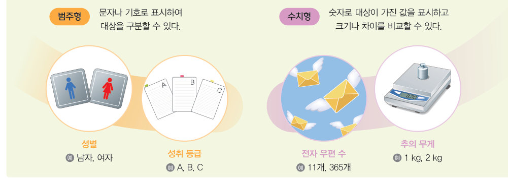
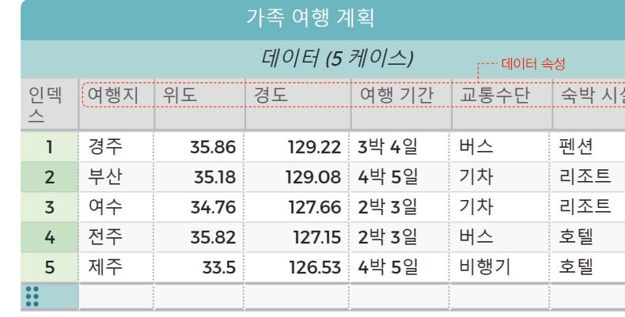

급식 잔반을 줄이려면 어떤 데이터가 필요할까? 문제에 맞는 데이터와 수집 방법을 고르고, 일기 예보 뉴스를 속성별로 나누어 보자. 미니 코답으로 가족 여행 데이터를 정렬·추가해 지도에 찍고, 서울 무료 와이파이 11,742 곳을 구별로 살펴보자.
문제에 따라 데이터 없이 해결 가능한 것도 있지만, 다양한 데이터를 수집하고 분석하여 해결해야 하는 문제도 있다. 데이터를 이용해 문제를 해결하기 위해서는 문제 해결에 적합한 데이터를 수집하는 것이 중요하다.
| 스마트폰 사용 습관을 개선하려면 어떻게 해야 할까? | |
| 앞으로의 날씨는 어떻게 예상할 수 있을까? | |
| 운동 경기의 승부는 어떻게 예측할까? | |
| 급식 잔반량을 줄일 수 있는 방법은 무엇일까? |
데이터를 수집하는 방법에는 인터뷰, 관찰, 설문 조사, 센서 이용과 같이 데이터를 직접 수집하는 방법과 검색 엔진, 데이터 전문 웹 사이트 등에서 이미 정리해 놓은 데이터를 수집하는 방법 등이 있다.
직접 수집 — 목적에 맞는 정확하고 다양한 종류의 데이터를 수집할 수 있는 장점이 있으나 시간과 비용이 많이 드는 단점이 있다. 검색 엔진과 데이터 전문 웹 사이트 — 원하는 데이터를 빠르고 편리하게 수집할 수 있지만, 검색 엔진은 데이터의 검증이 필요하고, 데이터 전문 웹 사이트는 문제 해결에 적합한 데이터를 찾기 어려울 수 있다. (공공데이터포털 data.go.kr, 국가통계포털 kosis.kr, AI 허브, 캐글 kaggle.com, 방송통계포털)

| 교실의 온도와 습도를 1 시간마다 기록한다. | |
| 우리 반 친구 전체에게 좋아하는 급식 메뉴를 물어본다. | |
| 영양사 선생님께 식단을 짜는 방법을 여쭈어본다. | |
| 점심시간 동안 급식실 줄의 길이를 지켜보며 기록한다. | |
| 전국 중학생 수를 국가통계포털에서 내려받는다. | |
| ‘우리 동네 맛집’ 사진을 인터넷에서 찾아본다. |
| 직접 수집하면 목적에 맞는 정확한 데이터를 얻을 수 있지만 시간과 비용이 많이 든다. | |
| 검색 엔진으로 찾은 데이터는 검증할 필요가 없다. |
수집한 데이터는 그 의미를 파악하여 공통점을 기준으로 구분하거나 형식에 따라 구분하여 문제 해결 목적에 맞게 활용할 수 있다. 지역, 날씨, 최고 기온과 같이 데이터의 의미, 공통점을 기준으로 묶을 수 있는 부분에 해당하는 것을 데이터 속성이라고 한다(의미를 지니면서 더 이상 분리되지 않는 데이터의 최소 단위). 데이터를 속성별로 구분하여 정리하면 필요한 정보를 빠르게 찾을 수 있고 데이터의 활용도를 높일 수 있다.

| 혈액형 | |
| 키(cm) | |
| 교통수단(버스, 기차, 비행기) | |
| 위도·경도 | |
| 하루 스마트폰 사용 시간 | |
| 성취 등급(A, B, C) |
응용 소프트웨어를 이용하면 수집한 데이터를 문제 해결 목적에 맞게 구분하여 효율적으로 관리할 수 있다. ‘가족 여행 계획하기’라는 문제를 해결하기 위해 필요한 데이터에는 여행지, 여행지 위치, 여행 기간, 교통수단, 숙박 시설 등이 있다. 코답(CODAP)에서 속성별로 입력한 뒤, 정렬·편집·변환하고 저장·공유한다. 지도 기능을 이용하려면 위도는 Latitude, 경도는 Longitude로 이름을 바꿔야 한다. (행: 가로로 나열된 데이터의 개별 항목, 열: 세로로 나열된 데이터의 속성, 셀: 행과 열이 만나 값을 입력하는 단위)

| 용돈 기록장, 과목별 점수 자동 계산, 그래프 작성 | |
| 중학교 전체 학생의 성적, 인터넷 쇼핑몰의 고객·상품 관리 | |
| 어디서나 인터넷에 접속하여 문서·사진을 저장하고 함께 편집 |
지방행정 인허가 데이터 개방 웹 사이트(localdata.go.kr)의 ‘무료 와이파이 정보’를 내려받아 설치 장소명, 설치 장소 상세, 와이파이 SSID, 도로명 주소, WGS84 위도, WGS84 경도만 남기고, 위도·경도 속성 이름을 Latitude·Longitude로 바꾼 뒤 지도로 표시한다. 아래는 넣어 둔 서울특별시 무료 와이파이 정보.csv(11,742 곳)를 그대로 그린 지도이다.
| 03 데이터를 속성별로 구분하여 정리하면 목적에 따라 필요한 정보를 빠르게 찾을 수 있고, 데이터의 활용도를 높일 수 있다. |
| 평가 기준 | 스스로 평가 |
|---|---|
| 컴퓨팅 사고력 데이터를 수집하는 다양한 방법을 설명할 수 있는가? | |
| 컴퓨팅 사고력 문제 해결에 적합한 데이터를 수집하고, 목적에 맞게 구분하여 관리할 수 있는가? | |
| 디지털 문화 소양 응용 소프트웨어를 활용하여 데이터를 관리할 수 있는가? |